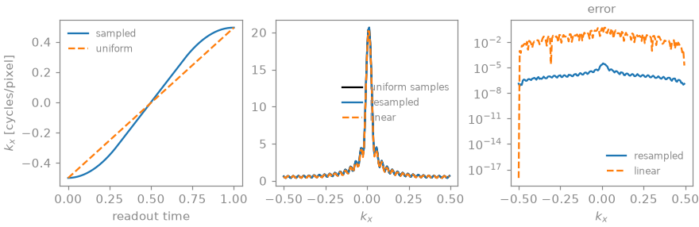

Note
Go to the end to download the full example code.
EPI Nyquist ghost and ramp sampling#
Two corrections an echo-planar readout needs before its lines form a Cartesian k-space: the odd/even phase that produces the Nyquist ghost, estimated from a three-line navigator, and the resampling of samples taken on the gradient ramps onto the uniform grid.
The data is BART’s analytical Shepp-Logan phantom with eight simulated coils, into which a known readout delay is introduced, so the estimate can be compared with the delay.
import math
import numpy as np
import torch
import bartorch
import bartorch.tools as bt
The Nyquist ghost#
An EPI train reads alternate lines with readout gradients of opposite polarity. A delay between the gradient and the ADC shifts the echo of every line by the same time, which is a shift towards positive \(k_x\) on a forward line and towards negative \(k_x\) on a reversed one. In hybrid space – after the inverse transform along the readout – a shift in \(k_x\) is a linear phase in \(x\), so the reversed lines carry a phase the forward ones do not. A phase that alternates from line to line modulates k-space at the Nyquist frequency of the phase-encoding direction, and the image acquires a copy of the object displaced by half the field of view.
Below, forward lines carry \(+(a u + b)\) and reversed lines \(-(a u + b)\) in hybrid space, with \(u \in [-1, 1]\) the readout coordinate. A reversed line is stored in the order it was digitised, that is flipped along the readout.
SIZE = 128
SLOPE, OFFSET = 0.6, 0.25 # rad
kspace = bt.phantom(SIZE, kspace=True, coils=8)[:, 0] # (coils, ky, kx)
hybrid = bartorch.fft(kspace, axes=(-1,), inverse=True, unitary=True)
u = torch.linspace(-1.0, 1.0, SIZE)
def acquire(row, polarity):
"""One readout of polarity +1 or -1, digitised in the order it was played."""
delayed = row * torch.polar(torch.ones(SIZE), polarity * (SLOPE * u + OFFSET))
line = bartorch.fft(delayed, axes=(-1,), unitary=True)
return torch.flip(line, [-1]) if polarity < 0 else line
train = [(acquire(hybrid[:, ky], 1 - 2 * (ky % 2)), ky % 2 == 1) for ky in range(SIZE)]
Ramp sampling#
Sampling during the gradient ramps shortens the echo spacing, but the
samples are not uniformly spaced in \(k_x\). The readout is the
transform of an object that spans support pixels, so samples at any
positions determine it, provided no two neighbouring samples are further
apart than one over the support, the Nyquist spacing of that object.
epi_ramp_operator() [1] is the regularized
least-squares inverse of the transform at the sampled positions followed by
the transform at the uniform ones.
A trapezoidal readout gradient of 160 samples with ramps of 30 % of its duration is simulated for a one-dimensional object of 64 pixels, positions in cycles per pixel.
SUPPORT, SAMPLES = 64, 160
profile = torch.zeros(SUPPORT, dtype=torch.complex128)
profile[16:48] = torch.linspace(0.3, 1.0, 32) * torch.exp(1j * torch.linspace(0.0, 2.0, 32))
pixels = (torch.arange(SUPPORT) - SUPPORT // 2).double()
time = torch.linspace(0.0, 1.0, SAMPLES, dtype=torch.float64)
RAMP = 0.3
gradient = torch.clamp(torch.minimum(time / RAMP, (1 - time) / RAMP), 0, 1)
sampled_at = torch.cumsum(gradient, 0)
sampled_at = sampled_at - sampled_at.mean()
sampled_at = 0.5 * sampled_at / sampled_at.abs().max()
uniform_at = torch.arange(SAMPLES, dtype=torch.float64) / SAMPLES - 0.5
def encode(positions):
return torch.exp(-2j * math.pi * torch.outer(positions, pixels)) @ profile
measured, truth = encode(sampled_at), encode(uniform_at)
operator = bt.epi_ramp_operator(sampled_at, uniform_at, SUPPORT)
resampled = (measured.to(torch.complex64)[None] @ operator.T)[0]
Linear interpolation between neighbouring samples is the comparison.
linear = torch.complex(
torch.from_numpy(np.interp(uniform_at, sampled_at, measured.real)),
torch.from_numpy(np.interp(uniform_at, sampled_at, measured.imag)),
)
def error(estimate):
return float((estimate.to(torch.complex128) - truth).norm() / truth.norm())
step = float(torch.diff(sampled_at).max()) * SUPPORT
print(f"largest step x support: {step:.2f} (the samples determine the object below 1)")
print(f"band-limited resampling {error(resampled):.1e} linear interpolation {error(linear):.3f}")
largest step x support: 0.57 (the samples determine the object below 1)
band-limited resampling 1.4e-06 linear interpolation 0.032

The resampling is exact to the precision of the operator, which is returned in single precision; linear interpolation errs most on the plateau, where the samples are furthest apart. The ratio printed above is the condition to check on a measured trajectory: where a step exceeds one over the support, the readout is aliased and no resampling recovers it.
References#
Total running time of the script: (0 minutes 1.914 seconds)